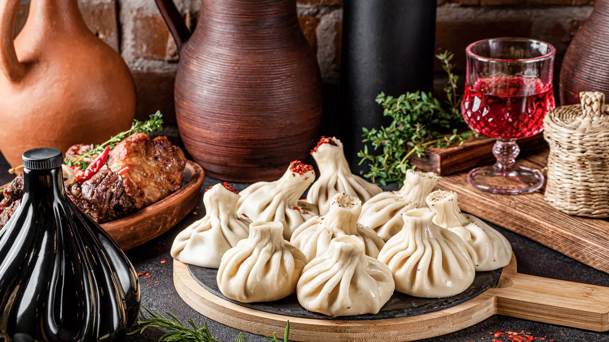

ხინკალი
ხინკალი — ქართული ცომის გუფთა. შედგება ღორისა და საქონლის (ან ცხვრის) ხორცის ნარევისგან. წარმოადგენს ცომისგან დამზადებულ ერთგვარ ტომარას, რომელშიც მოთავსებულია გატარებული ხორცი. მზადდება ხარშვის წესით
ისტორია
ხინკლის დამზადება სათავეს იღებს აღმოსავლეთ საქართველოს მთიან რეგიონებში. მისი გამოგონების პატივი მიეწერებათ როგორც მოხევეებს, ასევე ფშავლებს, მთიულებსა და ხევსურებს. უძველესი წესით ხინკალი მზადდება მსხვილად დაკეპილი ხორცით. მთიან რაიონებში ასეთი მეთოდით ხინკალს დღემდე ამზადებენ.

ხინკალი და საქართველო
ხინკალი საქართველოში არა მხოლოდ გასტრონომიის ნიმუშია, არამედ რიტუალური ტრადიცია და ქვეყნის კულტურის განუყოფელი ნაწილი. საქართველოს მთაში მიიჩნევენ, რომ ის მზის შესაწირი სიმბოლური კერძია, რომელიც კვირაობით და დღესასწაულებზე მზადდებოდა, ქართველებისთვის ბორჯღალი არის მზის, სიცოცხლის, მოძრაობის მარადიული სიმბოლო. ისინი მიიჩნევენ, რომ ხინკალი უნდა იყოს 28-ნაოჭიანი. ერთ-ერთ მთიულურ ლექსში ვხვდებით ასეთ ფრაზას: „ტიალო ხაჭოს ხინკალო, ოცდარვანაოჭიანო“. 28 მზის წელთა რიცხვია - მზე ცის სფეროს დიდი წრის გარშემოვლას ზუსტად 28 წელი უნდება. ხინკლის კუჭი მზეს ნიშნავს, ხოლო ნაოჭები - მზის სხივებს. ხინკალს ჩვენი წინაპრები კვირა დღეს, ანუ „მზის დღეს“ ამზადებდნენ (კვირა დღეს ძველ ქართულად „მზისა“ ერქვა, ანუ „საუფლო დღე“). ეს კიდევ ერთი დასტურია იმისა, რომ ხინკალი და ბორჯღალი ერთმანეთთან მჭიდრო კავშირშია. საქართველოს მთიან რეგიონებში ბევრ ლეგენდას მოისმენ ხინკალსა და მისი შექმნის ისტორიის შესახებ. ყველაზე გავრცელებული ხევისბერის ცოლის, სახელად ხინდას, ისტორიაა. სტუმრის პატივსაცემად მას საგანგებოდ ეს ხორციანი კერძი მოუმზადებია და მის ნახელავს ისეთი მოწონება დაუმსახურებია, რომ კერძისთვის ქალის სახელი დაურქმევიათ - „ხინდალი“, რომელიც დროთა განმავლობაში „ხინკლად“ იქცა. არსებობს სხვა ვერსიაც, რომ მას „ლხინკარი“ ერქვა, რადგან სადღესასწაულოდ მზადდებოდა და მზის შესაწირი კერძი იყო.
როგორ მოვამზადოთ ხინკალი?
დღეისთვის ხინკლის დაგემოვნება საქართველოს თითქმის ყველა კუთხეშია შესაძლებელი, მაგრამ ხინკლის სამშობლოდ ფშავი და თუშეთია აღიარებული, საიდანაც ის დანარჩენ საქართველოში გავრცელებულა. თავდაპირველად ხინკალი ცხვრის ხორცით მზადდებოდა და ცხელ-ცხელი საუკეთესო საკვები იყო დიდთოვლიანი ზამთრის პირობებში.
როგორც კი ხინკალმა მთიდან ბარში ჩამოინაცვლა, ქალაქმა მასში კორექტივები შეიტანა - ცხვირს ხორცი ღორისა და საქონლის ხორცის ნაზავით ჩაანაცვლა, დაკეპილი ხორცის ფარშს გატარებული ამჯობინა, ბეგქონდარა, რომელიც ქალაქში ძნელად იშოვებოდა, ძირათი შეცვალა, ხახვსა და პილპილს მწვანილიც დაუმატა და გაჩნდა ქალაქური ხინკლის რეცეპტიც. თუმცა პოპულარულ სახინკლეებსა და რესტორნებში ყველა რეცეპტით მომზადებულს შემოგთავაზებენ.
ხინკლის ვარიაციები
საქართველოში შეგიძლია ხაჭოს, ბატის აპოხტის, ყველის, კარტოფილის, სოკოს ხინკალი მიირთვა, ასევე - მოდერნიზებული ვარიაციებიც, მაგალითად, კრევეტებით.
საინტერესოა ხინკლის მირთმევის კულტურაც. ხინკალს ლუდთან ერთად გეახლებიან, რადგან საქართველოს მთაში უფრო ლუდის გამოხდა იყო პოპულარული, ვიდრე ღვინის დაყენება.
ხინკალს მიირთმევენ ხელით და მისი ერთ-ერთი მთავარი ფასეულობა ბულიონია, რომელიც ცომიდან ისე უნდა ამოხვრიპო, რომ წვეთი არ დაღვარო. ეს აუცილებელია, თუკი გინდა, ხინკლის დაგემოვნების მთელი სიამოვნება შეიგრძნო.